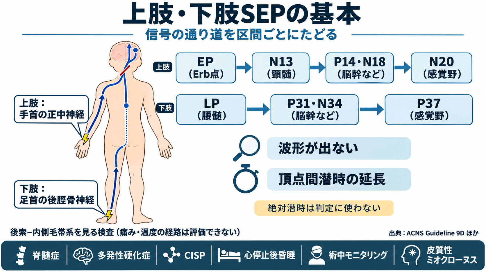

上肢・下肢SEPの基本
上肢と下肢の体性感覚誘発電位（SEP）で、信号がたどる経路と主な成分をまとめた概念図です。波形は描いていません。

図の要点
- 標準の検査は、上肢が手首での正中神経刺激、下肢が足関節での後脛骨神経刺激です。
- 上肢は EP（Erb点）→ N13（頸髄）→ P14・N18（脳幹など）→ N20（一次体性感覚野）、下肢は LP（腰髄）→ P31・N34（脳幹など）→ P37（一次体性感覚野）と区間をたどります。
- 異常の中心は、必須の波形が出ないことと、頂点間潜時の延長です。絶対潜時は腕の長さや体温に左右されるため、異常の基準にしないのが原則です。
- SEPが見るのは後索–内側毛帯系で、痛みや温度の経路（脊髄視床路）は評価できません。
出典と注意
American Clinical Neurophysiology Society. Guideline 9D: Guidelines on short-latency somatosensory evoked potentials. J Clin Neurophysiol. 2006;23(2):168-179（PMID: 16612233）ほか、記事の参考文献に基づいて作成した概念図です。正常値と判定基準は各施設の基準を使ってください。